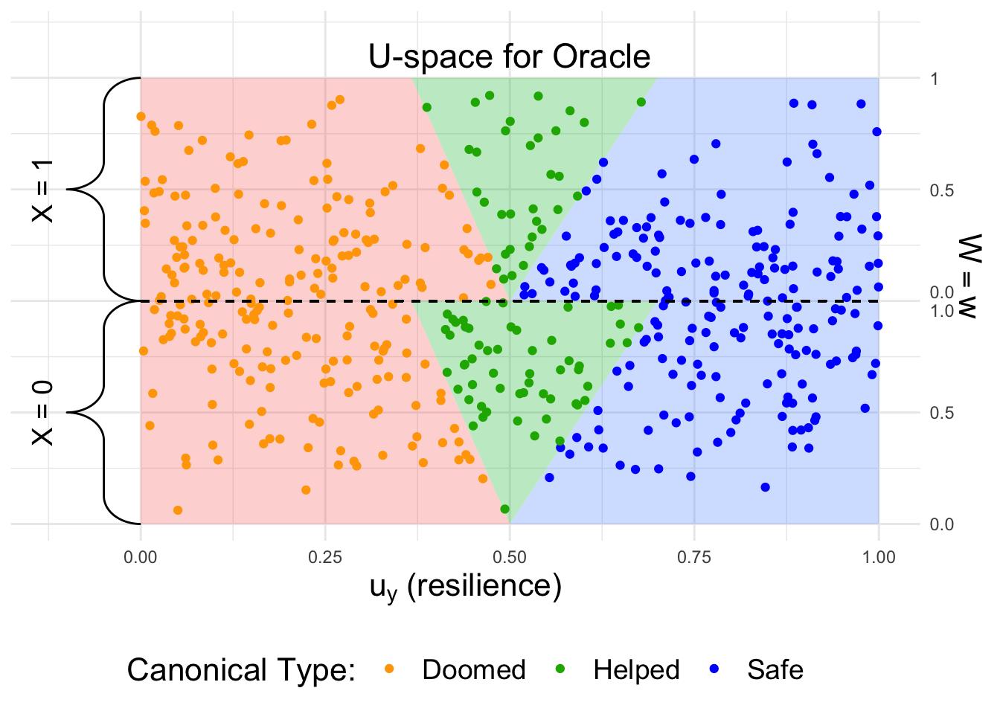
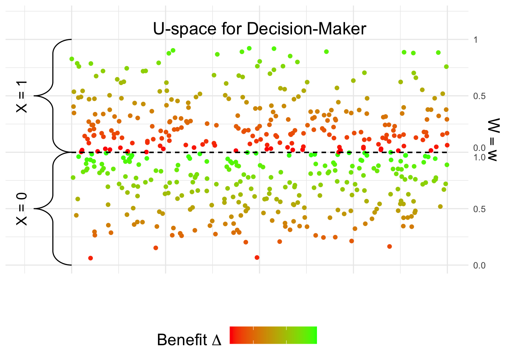

set.seed(2023)
n <- 5000
# generate data from the SCM
x <- rbinom(n, 1, 0.5)
uw <- runif(n)
w <- ifelse(x, 1 - sqrt(1-uw), sqrt(uw))
uy <- runif(n)
# f_Y coefficients
alph <- 1 / 5
beta <- 1 / 3
# assuming a policy D s.t. P(d | w) = w.
d <- rbinom(n, 1, prob = w)
y <- as.integer(uy + beta * w *d - alph * w > 0.5)
labels <- c("Doomed", "Helped", "Safe")
delta <- beta * w
# determine canonical type
canon <- ifelse(uy > 0.5 + w * alph, "Safe",
ifelse(uy > 0.5 + w * alph - w * beta, "Helped", "Doomed"))Outcome Control – Cancer Surgery Example
Oracle’s Perspective
Consider the structural causal model (SCM) introduced in Ex. 5.10 of the paper (Plecko and Bareinboim 2022): \[\begin{align} X &\gets U_X \label{eq:cancer-scm-1} \\ W &\gets \begin{cases} \sqrt{U_W} \text{ if } X = x_0, \\ 1 - \sqrt{1 - U_W} \text{ if } X = x_1 \end{cases} \\ D & \gets f_D(X, W) \\ Y &\gets \mathbb{1}(U_Y + \frac{1}{3} WD - \frac{1}{5} W > 0.5). \\ U_X &\in \{0,1\}, P(U_X = 1) = 0.5, \\ %U_Z&, U_W&, U_Y \sim \text{Unif}[0, 1], \label{eq:cancer-scm-n} \end{align}\] We begin by generating \(n = 5000\) samples from the SCM:
The latent variable \(U_Y\) determines which canonical type the individual belongs to. After generating the data, we visualize it from the oracle’s perspective, assuming access to \(U_Y\):

From the oracle’s perspective, treating individuals in the green area is optimal. However, we next look at the perspective of the decision-maker:
Decision-maker’s Perspective
We next plot the decision-maker’s perspective, which is based on estimating the benefit \(E[Y_{d_1} - Y_{d_0} \mid x, z, w]\). We first estimate the benefit from the data.
df <- data.frame(x, w, d, y)
# fit a logistic regression model
logreg <- glm(y ~ x + w * d, data = df, family = "binomial")
# compute the potential outcomes
df_d0 <- df_d1 <- df
df_d0$d <- 0
df_d1$d <- 1
py_d0 <- predict(logreg, df_d0, type = "response")
py_d1 <- predict(logreg, df_d1, type = "response")
# compute the benefit
df$delta_hat <- delta_hat <- py_d1 - py_d0After estimating \(\Delta\), we visualize the data based on the obtained estimates:

Therefore, when looking at the benefit, it is clearly higher for the \(X = x_0\) group. This explains why the decision-maker may naturally decide to treat more individuals in the \(X = x_0\) group.
Computing the Disparity in Treatment Allocation
We look at the policy \(D^*\) obtained from Algorithm 5.3: \[\begin{align} D^* = \mathbb{1}(\Delta > \frac{1}{6}). \end{align}\]
# construct the decision policy
d_star <- as.integer(delta_hat > quantile(delta_hat, 0.5))
# look at resource allocation in each group
tapply(d_star, x, mean) 0 1
0.7513683 0.2366912 Therefore, we obtained that \[\begin{align} P(d^* \mid x_1) - P(d^* \mid x_0) \approx -51.5\%. \end{align}\] The true population value (as shown in the paper) is -50%.
Decomposing the Disparity
We next look at decomposing the disparity using Algorithm 5.4. We first use the faircause package to decompose the disparity in resource allocation:
# implement the new policy
df$d <- d_star
# apply the fairness cookbook
fc_d <- fairness_cookbook(df, X = "x", Z = NULL, W = "w", Y = "d",
x0 = 0, x1 = 1, nboot1 = 5, model = "linear")
autoplot(fc_d, signed = FALSE) + ggtitle(TeX("$P(d^* | x_1) - P(d^* | x_0)$ decomposition")) +
scale_x_discrete(labels = c("TV", "DE", "IE", "SE"))
Therefore, as explained in the paper, the disparity is driven by the indirect effect. We can also decompose the disparity in the estimated benefit \(E[\Delta \mid x_1] - E[\Delta \mid x_0]\):
# apply the fairness cookbook
fc_delta <- fairness_cookbook(df, X = "x", Z = NULL, W = "w", Y = "delta_hat",
x0 = 0, x1 = 1, nboot1 = 5, model = "linear")
autoplot(fc_delta, signed = FALSE) +
ggtitle(TeX("$E[\\Delta | x_1] - E[\\Delta | x_0]$ decomposition")) +
scale_x_discrete(labels = c("TV", "DE", "IE", "SE"))
Constructing the causally fair \(D^{CF}\) policy
The clinicians first want to construct the causally fair policy. For doing so, they first construct the counterfactual values of the illness severity. In particular, they assume that the relative order of the values remains the same under the counterfactual change of the protected attribute.
# get order statistics for the X = x_1 group
ord_x1 <- order(w[x == 1])
# compute the sample quantile
quant_x1 <- ord_x1 / length(ord_x1)
# initialize the counterfactual values
w_cf <- rep(0, n)
# for X = x_0, values remain the same by consistency axiom
w_cf[x == 0] <- w[x == 0]
# for X = x_1, match to the corresponding quantile in the X = x_0 distribution
w_cf[x == 1] <- vapply(quant_x1, function(q) quantile(w[x == 0], q), numeric(1L))
# compute the counterfactual benefit
delta_cf <- w_cf / 3
b <- mean(d_star)
fcf <- ecdf(delta_cf)
fcf.inv <- inverse(fcf, lower = 0, upper = 1)
d_cf <- as.integer(delta_cf > fcf.inv(1 - b))
tapply(d_cf, x, mean) 0 1
0.5 0.5 Therefore, we see that \[\begin{align} P(d^{CF} \mid x_1) - P(d^{CF} \mid x_0) \approx 0\%. \end{align}\]
The true population value of the disparity for \(D^{CF}\), discussed in the paper, also equals \(0\%\).
Constructing the causally fair \(D^{UT}\) policy
Finally, to perform the utilitarian approach, we have from the disparity in \(D^{CF}\) that: \[\begin{align} M = 0. \end{align}\] Therefore, following Algorithm 5.5 with method = UT, we compute:
# compute \epsilon, l
epsilon <- mean(d_star[x == 1]) - mean(d_star[x == 0]) - 0 # -0 since M = 0!
l <- sum(x == 1) / sum(x == 0)
# compute inverse function of \Delta \mid x_0
f0 <- ecdf(delta_hat[x == 0])
f0.inv <- inverse(f0, lower = 0, upper = 1)
# compute \delta^{x_0}
delta_x0 <- f0.inv(1 - (mean(delta_hat[x == 0] > quantile(delta_hat, 0.5)) +
epsilon * l / (1 + l)))
# compute inverse function of \Delta \mid x_0
f1 <- ecdf(delta_hat[x == 1])
f1.inv <- inverse(f1, lower = 0, upper = 1)
# get the budget
b <- mean(d_star)
# compute \delta^{x_1}
delta_x1 <- f1.inv(1 - (b / mean(x == 1) - 1 / l * mean(delta_hat[x == 0] >= delta_x0)))
d_ut <- rep(0, length(d))
d_ut[x == 0] <- delta_hat[x == 0] > delta_x0
d_ut[x == 1] <- delta_hat[x == 1] > delta_x1
# compute the allocated proportions
tapply(d_ut, x, mean) 0 1
0.4996091 0.5004095 In particular, we have showed that \[\begin{align} P(d^{UT} \mid x_1) - P(d^{UT} \mid x_0) \approx 0\%. \end{align}\] The true population value also equals \(0\%\).
In general, the policies \(D^{CF}\) and \(D^{UT}\) may pick different individuals for treatment. The conditions under which the policies \(D^{CF}\) and \(D^{UT}\) are the same are discussed in Appendix D of the paper. In the above example, these conditions are satisfied, and \(D^{CF}\), \(D^{UT}\) select the same group of individuals.
References
Plecko, Drago, and Elias Bareinboim. 2022. “Causal Fairness Analysis.” arXiv Preprint arXiv:2207.11385.